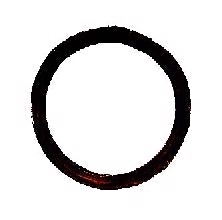

Zen Meister
ein Kommunikationsratespiel für 2 oder mehr Spieler,
Dauer: 20min, ab 8 Jahren
Spielregeln
Idee
Die Schüler versuchen ein Ding zu finden, das 4 verdeckte Eigenschaften erfüllt, die vom Zen Meister ausgewählt wurden.
Material
- 32 Spielkarten
- 1 Rateblock
- 1 Stift
Vorbereitung
- Ein Spieler wird Zen Meister. Alle anderen Spieler sind Schüler.
- Die 4 Tippkarten, der Rateblock und der Stift werden offen in Spielmitte gelegt.
- Die restlichen Karten werden nach den 4 Farben getrennt und zu verdeckten Stapeln gemischt.
Spielablauf
Der Zenmeister findet ein mögliches Lösungwort
- Der Zen Meister zieht von jedem Stapel die oberste Karte verdeckt auf die Hand.
- Er liest sich die obere Hälfte jeder Karte durch und überlegt sich ein Ding, dass allen vier Eigenschaften genügt.
- Sollte er kein Ding finden, darf er einzelne Karten auf seiner Hand drehen, so dass die untere Seite der Karte nun oben steht und er diese Eigenschaft berücksichtigt.
- Er sollte darauf achten, dass die Kombination der Eigenschaften nicht auf zu viele Dinge zutreffen.
(Wenn ihm spontan mehr als 10 Dinge einfallen, die auf alle Eigenschaften passen, ist die Kombination zu einfach.)
- Das gefundene Ding des Zen Meisters ist im weiteren Spielverlauf nicht mehr von Bedeutung. Es dient nur dazu sicher zu stellen, dass es mindestens eine Lösung und nicht zu viele Lösungen gibt.
Beispiel:
Der Zenmeister hat die Eigenschaften "ist kugel- oder eiförmig", "mit Rad oder vollständig drehbarem Teil", "es gibt jetzt mehr als vor 100 Jahren",
"mehr als 10m hoch" ausgewäht. Er überlegt sich "Fesselballon" als mögliche Lösung. Ihm fallen auch kaum andere mögliche Lösungen ein.
Die Schüler versuchen ein Lösungwort zu finden
- Mit Hilfe des Rateblock versuchen die Schüler nun über mehrere Runden ein Ding zu finden, dass allen Eigenschaften entspricht.
- Die vier offen ausliegenden Tippkarten geben den Schülern eine Hilfestellung, welche möglichen Eigenschaften im Spiel sind.
- In den Runden 1,2,3 und 5,6,7 überlegen Sie gemeinsam ein Ding, dass sie auf den Rateblock schreiben.
- Der Zenmeister überprüft dann die Eigenschaften dieses Ding gegen seine ausgewählten Eigenschaften.
- Wenn das Ding eine dieser Eigenschaft erfüllt, markiert der Zenmeister die zugehörige Spalte hinter dem Ding mit einem "X". Falls nicht, markiert er die Spalte mit einem "O".
- In seltenen Fällen kann der Zenmeister die Eigenschaft eines Ding nicht beantworten. Dann markiert er die Spalte mit einem "?".
- In den Runden 4 und 8 können die Schüler sich vom Zenmeister einen Tipp geben lassen. Dazu markieren Sie eine Spalte mit einem "X". Der Zenmeister überlegt sich nun ein Ding, dass die Eigenschaft in dieser Spalte erfüllt und schreibt diese Ding auf den Rateblock. Über die anderen Eigenschaften wird dabei keine Aussage gemacht.
Spielende
Sobald die Schüler ein Ding aufschreiben, dass vom Zenmeister in allen 4 Spalten ein "X" erhält, haben Sie die Partie gewonnen. Sollte Ihnen dass in Runde 9 noch nicht gelingen, haben Sie verloren.
Kontakt
Matthias Schmitt, Ottostr. 75/77, 50823 Köln
mschmitt@db12.de, 0160/7190392